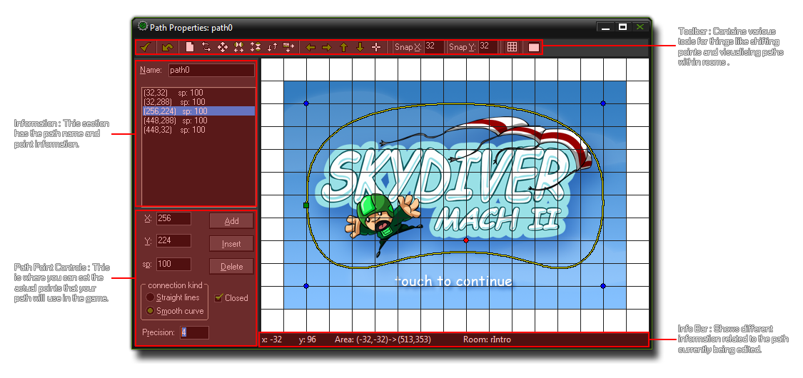
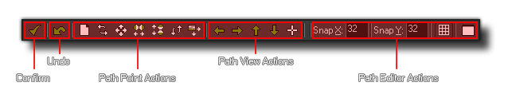
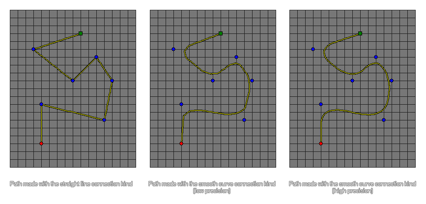

At some point while creating your games you will need one of your objects to follow a path through a level. Now, this can be done by simply creating an array of positions within the room and then having an instance
move between them, but that can be a chore to set up and is difficult to change, test and adapt for different instance. For this reason GameMaker:Studio has path resources and a dedicated
path editor.
The basic idea is rather simple - you define a path by drawing it in the path editor, then you can place an action (or code) in the creation event of an object to tell the object to follow that particular path. You can also set
the speed to follow the path and a number of other actions relating to the position and orientation of the path within the room. Lets start by looking at the path editor and how that works.
NOTE : If you are using the Free version of GameMaker:Studio you are limited to a maximum of 10 paths per game. For more details see
here.
To create a new path resource in your game, choose Create Path from the Resources menu (or right click on the path resource and select Create Path), which will open the following
window where you can create a new path (the image shows a path already created) :

As you can see, most of the path editor is taken up with the a visual representation of the space your path is drawn in, but around the edges there are a number of buttons, tabs and information bars that are there to help
you in the task of creating and changing the paths you make.
As with all resources in GameMaker:Studio you should give your new path a unique name as this is what will be used to identify it throughout the game you are making, and a good system that a lot of people
use is to prefix (or suffix) the resource for easy recognition in code or actions (eg: path_Enemy_1 or PowerUp_path). Once you have named the path, you can start to define it by placing points in the
main window on the right. This is simply done by clicking the left mouse button on a point where you want the path to pass through, with a green square signifiying the start of the path, a red dot being the
current path point, and a blue dot being a normal path point (the path itself is drawn as a yellow line). You can click any point of a path and then drag the mouse to move it around in the editor, although be aware that
the green path start position is not directly selectable as it changes position automatically depending on whether the path is smooth or not (more on this further down). These points are added automatically to the
point list beneath the path name and you can also click on a point in the list to select it in the main window.
At the top of the path editor you can find the tool bar which has a number of buttons that refer to actions in the path editor : 
- Confirm : Clicking this button will close the path editor and save any changes you have made. Beware, as this will not warn you that the path has changed, as clicking the close button would do, but will just save directly any changes you have made.
- Undo : This is a simple, one level, undo button. By one level, we mean that only the last action performed will be undone.
- Path Point Actions : These buttons all change the path points in some way, giving you the ability to clear them completely, mirror them and shift them.
- Path View Actions : You can use these to pan the view of the path around (as the path may be bigger than the visible area in the editor). Note that you can also click and
- Path Editor Actions : Here you can select the snap resolution for the path points, as well as toggle the grid visibility on or off. The last button permits you to select a room to be drawn as a background which can be very useful for giving you a "feel" for how the path will work in any given game room.
You can add points to the path using the Add button, which will add a new point to the path, but at the same position as the previous path point created (or at the path start position if none have
been created yet). these points can then be moved by clicking and dragging on them (as can all points on the path), or by changing the values presented to you on the left for the X and Y position.
you can also set a speed for individual path points by changing the value in the Sp box (default value is 100). The speed value is actually a percentage of the speed at which you make the instance
move along the path, so if you start an instance at a speed of 2 (2 pixels per step) along a path and then one of the path points has a Sp value of 50, the instance will reduce speed as it approaches this point
to a speed of 1 (50% of the path speed). Equally, you can set the Spd to 150% and the instance will accelerate as it reaches the point. In this way you can create some nice dynamic-looking movement without
any code whatsoever!
Beneath the Add button you have Insert and Delete buttons too. If you select a point on your path (either by clicking on it in the editor or by clicking the point list on the left of the editor) and then click on
Insert, a new point will be "inserted" into the path at the same position. You can then drag this point to get it to the position you wish. If you click on the Delete button, the point selected will be removed from the
path (there is an undo button at the top of the screen should you make a mistake).
Finally, you can specify the connection kind and whether the path should be closed or not (a closed path will connect the last point on the path with the first). The conection kind can be either straight line,
or smooth where a straight line connect simply connects the points of a path in a linear basis, with angular changes at each point, while a smooth connection will create a much softer path that may not pass directly
through any of the points, but rather take an approximate line, creating nice curves. You can also specify the precision for the curves (default is 4) which can be from 1 to 8 with 8 being the smoothest. The image below shows
an example of how these options affect the path :

This bar at the bottom shows the x and y coordinates of the mouse in the path editor, as well as the area of the room visible in the path editor window. The path editor has a center point (0,0) and it's coordinate system works
the same as for the room editor, in that down is +y, up is -y, right is +x and left is -x, and in this way you can plot your path around these coordinates. This means that it can be useful to know what part of this area you are looking
at while designing your path and this is shown by the Area values, with the first set of coordinates being the upper left corner of the current view, and the second set of coordinates being the lower right corner.
To assign a path to an instance of an object, you can use the path actions (covered in the section Actions - Move Actions) or you can use code.
When using scripts or pieces of code you have more control over the way the path is executed, and there are a variety of functions that cover basic actions like starting the path (see
Reference - Paths), and more complex actions like modifying and changing path points from within the game (see
Reference - Changing Paths).